Welcome to Fish Information
Chilapi
"Chilapi" is the Marathi word for the fish "tilapia". chilapi is a freshwater fish found mainly in
tropical
regions. chilapi fish have a small, flat and elongated body, which makes them easy to identify
Body Structure:The Nile chilapi is a member of the cichlid and chilapi family. It has a
deep-bodied, compressed shape.
This species is bronze to brownish-gray dorsally and laterally, and white ventrically. It has a
truncated caudal fin that has
many thin black bands and a pinkish-red posterior margin.
Key Characteristicschilapi fish have a flat body. They are covered in smooth scales and come in
various colors ranging
from gray to reddish-brown. chilapi fish also have prominent fins, particularly on their back and tail.
Diet:They are mainly a herbivores that eating plankton, algae, and other vegetable matter.
Growthchilapi is mostly farmed in ponds or freshwater net pens, and some is produced in
recirculating aquaculture systems.
Protein: chilapi is an excellent source of protein, which helps repair and grow muscles.
But sometimes, they also like to eat worms, small fish, and insects.
Omega-3 fatty acids: Although chilapi is low in omega-3 fatty acids, it is a good source of
omega-6 fatty acids,
which help support heart health.
Vitamins and Minerals: chilapi is an excellent source of protein, vitamins and minerals. 100
grams of fresh
chilapi fish contains about 96 calories, 1.7 grams of fat, 20.08 grams of protein, vitamin B12, niacin,
selenium and potassium.
Production: chilapi fish is widely cultivated in the aquaculture industry, as it grows quickly
and can be
reared at low cost. chilapi farming is particularly widespread in China.
Cooking: chilapi fish has a mild and mild taste, which allows it to be cooked in a variety of
ways. It is
popular for frying, baking, grilling and using in curries.
Conclusion:
chilapi is a nutrient-rich, delicious, and versatile fish. While it can provide health benefits, it is
important
to be aware of its farming methods and sources.
Chilapi images
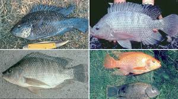
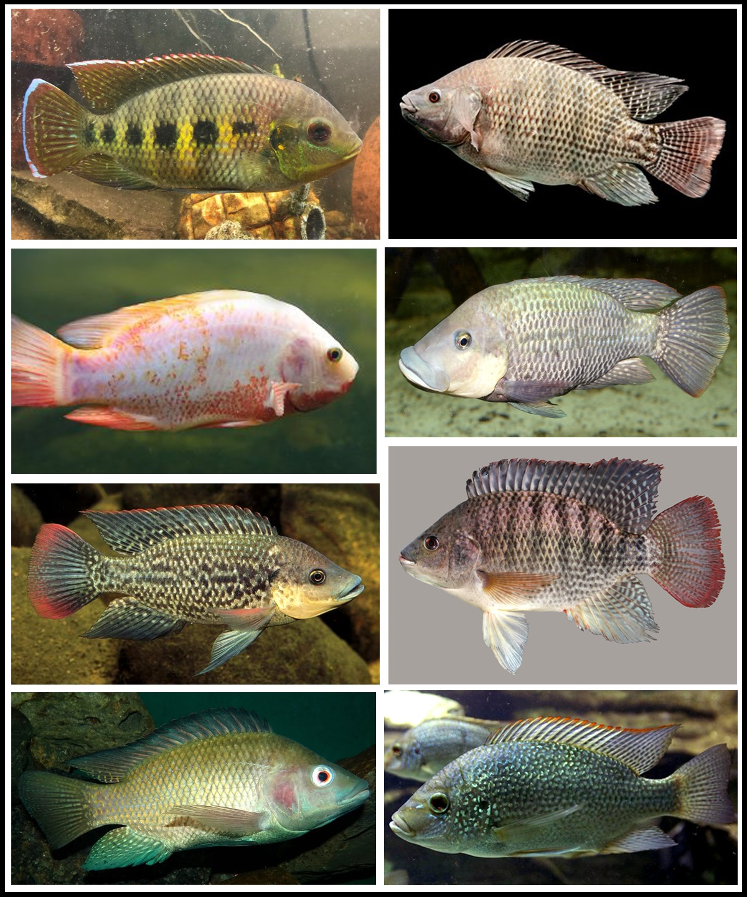
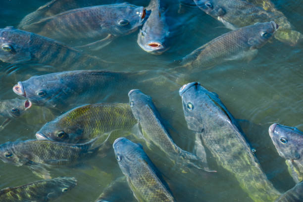
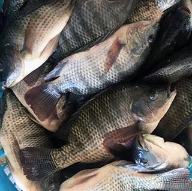
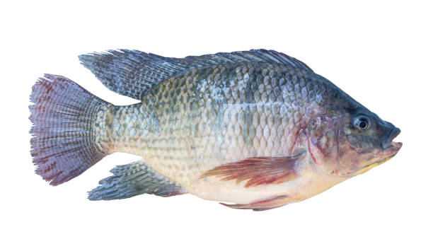
The following video may be helpful in showing you how to prepare chilapi fish:
Katla
katla is an important freshwater fish of South Asia, found mainly in the rivers of India, Bangladesh,
Nepal
and Pakistan. It is known for its fast growth, delicious meat and nutritional value.
Body structure: The body of the catla fish is short, broad and round. Its back is dark grey in
colour, while
its belly is white. It has black fins on its back.
Key characteristics: The catla fish has a large head, an upturned mouth and a thick lower lip.
Diet:The catla fish mainly feeds on sleeping animals found at the surface and mid-water levels,
such as
sleeping crustaceans, rotifers, insects and protozoa.
Growth: The fish grows rapidly and reaches maturity within 2-3 years. The eggs of the catla fish
are laid
on the surface of the water, and after the incubation process is complete, the eggs float to the surface
of the water.
Protein: Mackerel is an excellent source of protein, which helps repair and grow muscles.
Omega-3 fatty acids: Although this fish is low in omega-3 fatty acids, it is a good source of
omega-6 fatty
acids, which help support heart health.
Vitamins and minerals: Mackerel contains vitamin B3 (niacin), vitamin B12, selenium, potassium,
and
iodine.
Production: Mackerel is mainly produced in India, Bangladesh, and Nepal. In 2012, mackerel
production in these countries was about 2.8 million tons per year.
Cooking:
Mackerel has a mild and mild flavor, which allows it to be cooked in a variety of ways. It is popular
for
frying, roasting, grilling, and using in curries.
Conclusion:
Mackerel is a nutrient-rich, delicious, and versatile fish. Its consumption can provide health benefits,
but
it is important to be aware of its farming methods and sources.
Katala Images
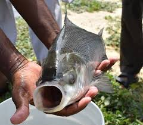
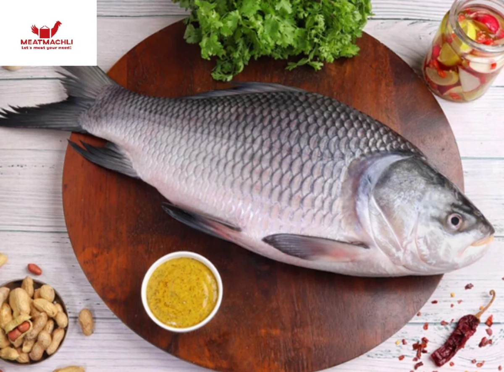
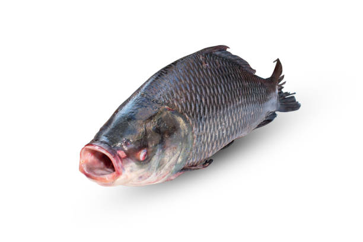
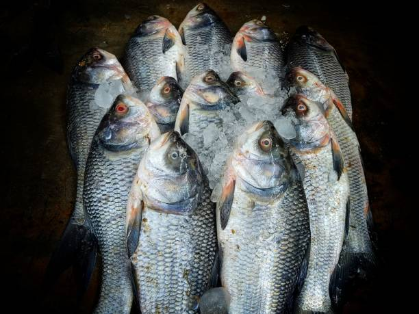
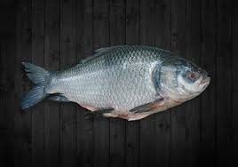
The following video may be helpful to see how to prepare Katala fish:
Maral
The maral (Channa striata), also known as the striped snakehead, is a freshwater fish native to
South Asia. It is known for its delicious flesh, rapid growth, and nutritional value.
Body Structure: The maral fish has a short, broad, and round body. Its dorsal surface is dark
gray, while its ventral surface is white. It has black fins on its back.
Key Characteristics: The maral fish has a large head, an upturned mouth, and a thick lower lip.
Diet: The maral fish feeds mainly on sleeping animals found at the surface and midwater
levels, such as sleeping crustaceans, rotifers, insects, and protozoa.
Growth: The fish grows rapidly and reaches maturity within 2–3 years. The maral fish eggs are
laid on the surface of the water, and after the incubation process is complete, the eggs float to
the surface of the water.
Protein: Maral fish is an excellent source of protein, which helps in muscle repair and growth.
Omega-3 fatty acids: Although this fish is low in omega-3 fatty acids, it is a good source of
omega-6 fatty acids, which help in heart health.
Vitamins and minerals: Maral fish contains vitamin B3 (niacin), vitamin B12, selenium,
potassium and iodine.
ProductionIn India, the production of maral fish, also known as snakehead fish, was 2.57 lakh
tonnes in 2022-2023. The major producers of maral fish in India are Andhra Pradesh, Bihar, and
Telangana.
Cooking:
Maral fish has a mild and mild flavor, which allows it to be cooked in a variety of ways. It is
popular for frying, roasting, grilling, and using in curries.
Conclusion:
Maral fish is a nutrient-rich, delicious and versatile fish. Its consumption can provide health
benefits, but it is important to be aware of its farming methods and sources.
Maral Images
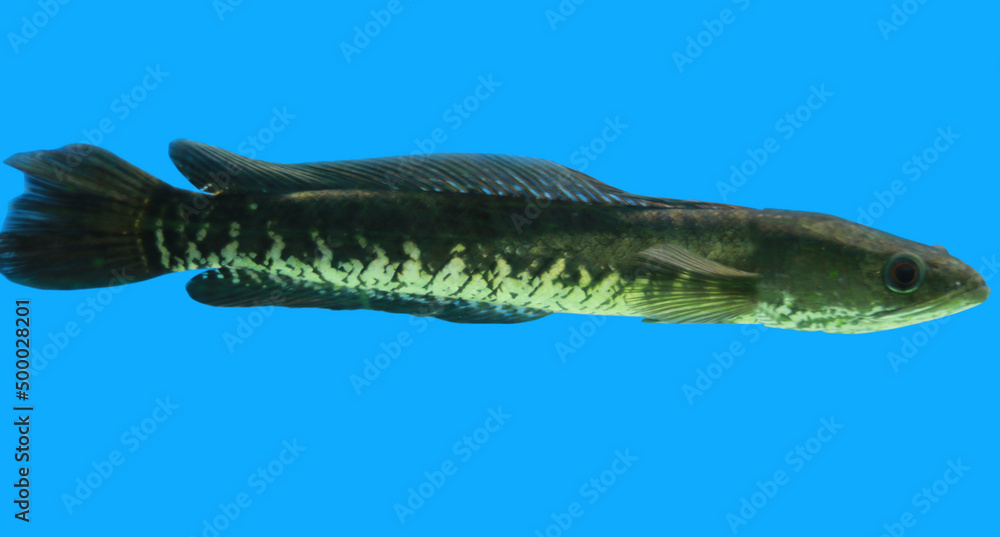
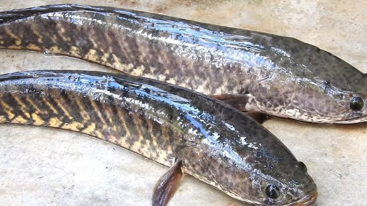
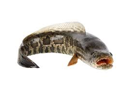
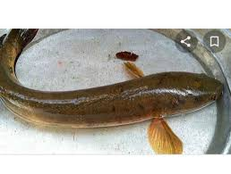
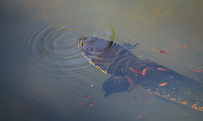
The following video may be helpful to see how to prepare Maral fish:
Magur
The Magur, also known as the 'walking catfish', is a freshwater fish native to South Asia. It is
known for its long whiskers and is famous for its delicious meat.
Body Structure: The Magur has a long, flexible and muscular body. Its back is dark grey in
colour, while its belly is white. It has small, spiny fins on its back.
Key Characteristics: The Magur has a large head, an upturned mouth and a thick lower lip. It
has no scales, which allows it to come to the surface of the water to breathe.
Diet: The Magur mainly lives on the bottom of the water and its main food is insects, larvae and
small fish.
Growth: This fish grows rapidly and can grow up to 45 cm in length. Weight gain is up to 1 kg.
Protein: The Magur is high in protein, which helps in muscle repair and growth.
Omega-3 fatty acids100 grams of magur fish muscle contains 0.42 milligrams of omega-3 fatty
acids.
Vitamins and Minerals: This fish is high in iron and other minerals, which help in various body
functions.
CookingMagur fish has a mild and mild flavor, which allows it to be cooked in a variety of ways.
It is popular for frying, roasting, grilling, and using in curries.
Conclusion:
Mangur fish is a nutrient-rich, delicious and versatile fish. Its consumption can provide health
benefits, but it is important to be aware of its farming methods and sources.
Magur Images
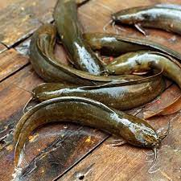
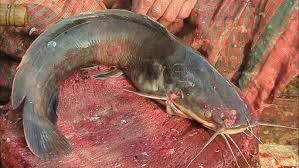
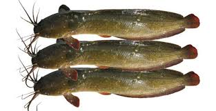
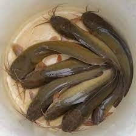
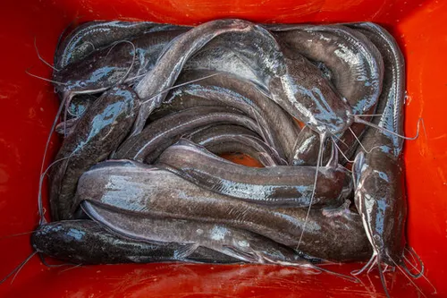
The following video may be helpful to see how to prepare Mangur fish:
Rohu
Rohu (Labeo rohita) is an important freshwater fish of South Asia, mainly found in rivers of
India, Bangladesh, Nepal and Pakistan. It is known for its fast growth, delicious flesh and
nutritional value.
Body structure: The body of the rohu fish is short, broad and round. Its back is dark grey in
colour, while the belly is white. It has black fins on its back.
Key characteristics: The head of the rohu fish is large, the mouth is turned upwards and the
lower lip is thick.
Diet: The rohu fish mainly feeds on sleeping animals found at the surface and mid-water levels,
such as sleeping crustaceans, rotifers, insects and protozoa.
Growth: The fish grows rapidly and reaches maturity within 2-3 years. The eggs of the rohu fish
are laid on the surface of the water, and after the incubation process is complete, the eggs float
on the surface of the water.
Protein: Rohu fish is an excellent source of protein, which helps in muscle repair and growth.
Omega-3 fatty acids: Although this fish is low in omega-3 fatty acids, it is a good source of
omega-6 fatty acids, which help in heart health.
Vitamins and minerals: Rohu fish contains vitamin B3 (niacin), vitamin B12, selenium,
potassium and iodine.
Production: Rohu fish is mainly produced in India, Bangladesh and Nepal. In 2012, these
countries produced about 2.8 million tonnes of rohu fish per year.
Cooking:
Rohu fish has a mild and mild taste, which allows it to be cooked in a variety of ways. It is
popular for frying, roasting, grilling and using in curries.
Conclusion:
Rohu fish is a nutrient-rich, delicious and versatile fish. Its consumption can provide health
benefits, but it is important to be aware of its farming methods and sources.
Rohu Images
 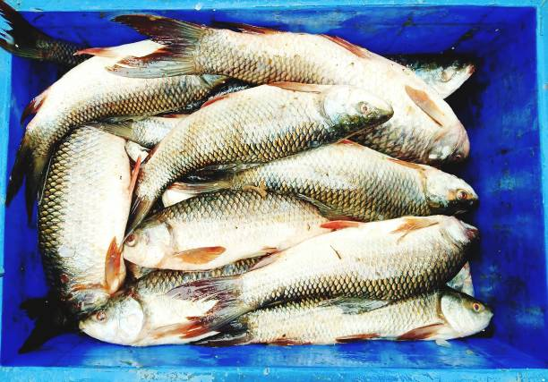
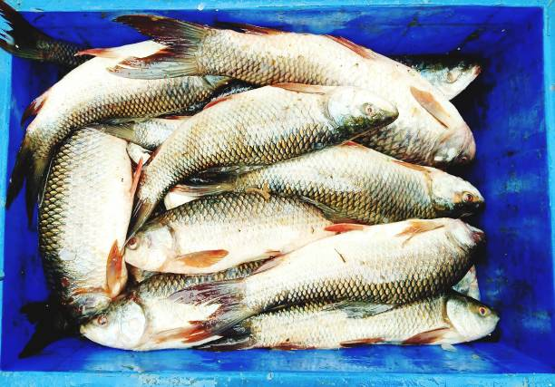
 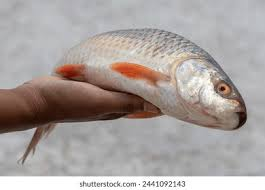
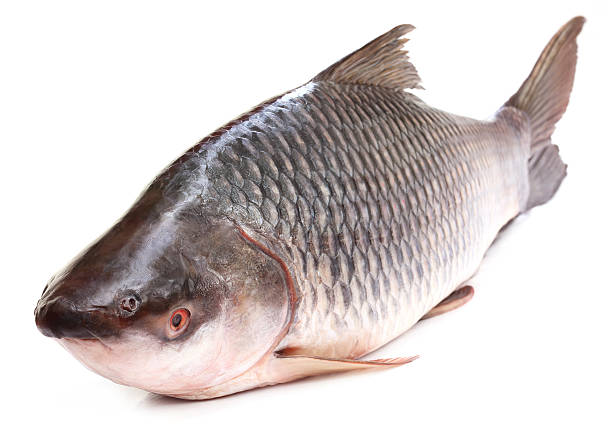
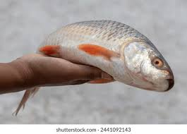
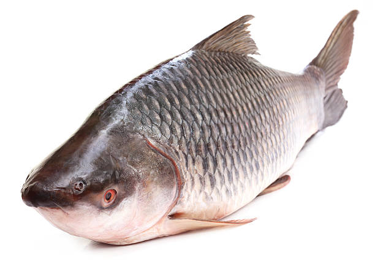
The following video may be helpful to see how to prepare Rohu fish: